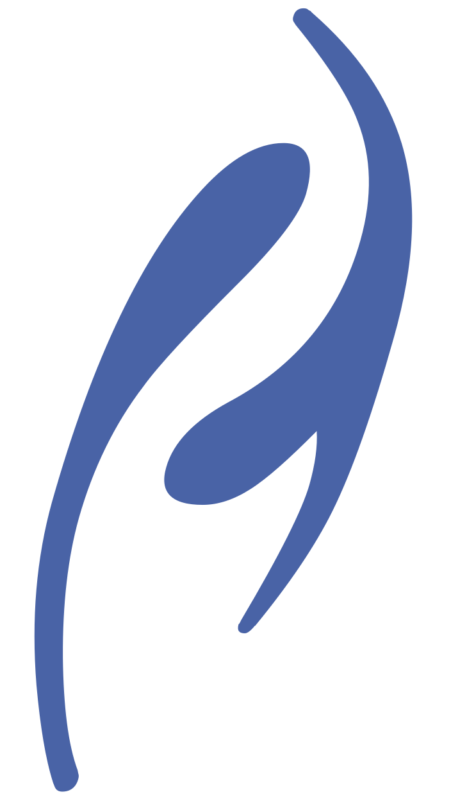

aosa, Inc.
aosa is a non-profit
organization whose mission is to be the primary sponsor for the ‹Programming› Conference and the
Modularity Symposium. aosa publishes the Programming Journal.
Steering Committee
- Theo D’Hondt (Chair)
Vrije Universiteit Brussel, Belgium (2020)
- Ademar Aguiar
University of Porto, Portugal (2023)
- Davide Ancona
University of Genoa, Italy (2022)
- Robert Hirschfeld (Past Chair)
Hasso Plattner Institute Potsdam, Germany (2019)
- Jane Cleland-Huang (ACM SIGSOFT observer)
DePaul University, Chicago, USA (ACM SIGSOFT)
- Krzysztof Czarnecki
University of Waterloo, Canada (2019)
- Wolfgang De Meuter
Vrije Universiteit Brussel, Belgium (2019)
- Matthew Flatt
University of Utah, Utah (2022)
- Lidia Fuentes
Universidad de Málaga, Spain (2019)
- Richard P. Gabriel
IBM Research, California (2020)
- Cristina Videira Lopes
University of California Irvine, California (2020)
- Benjamin Pierce (ACM SIGPLAN observer)
University of Pennsylvania, USA (ACM SIGPLAN)
- Patrick Rein (Secretary/Treasurer)
Hasso Plattner Institute Potsdam, Germany (2019)
- Guido Salvaneschi
Technische Universität Darmstadt, Germany (2021)
- Manuel Serrano
Inria, France (2021)
- Mario Südholt
École des Mines de Nantes, France (2019)
Past Steering Committee Members
- Gregor Kiczales (2008)
- Mehmet Akşit (2008)
- Yvonne Coady (2008) (Secretary/Treasurer)
- Karl Lieberherr (2009)
- Linda Northrop (2009)
- Tzilla Elrad (2009)
- Adrian Colyer (2010)
- Brian Barry (2010)
- Gail Murphy (2010) (Chair)
- Ana Moreira (2012)
- Awais Rashid (2012)
- Bob Filman (2012)
- Michael Haupt (2012) (Secretary/Treasurer)
- Oege de Moor (2012)
- Robert Baillargeon (2012)
- Theo D’Hondt (2012)
- Wouter Joosen (2012)
- Jean-Marc Jézéquel (2013)
- Mario Südholt (2013) (Chair)
- Uwe Hohenstein (2013)
- Harold Ossher (2014)
- Mira Mezini (2014) (Chair)
- Oscar Nierstrasz (2014)
- Paulo Borba (2014)
- Thomas Cottenier (2014)
- Kevin Sullivan (2015)
- Éric Tanter (2015)
- Richard Gabriel (Vice Chair) (2015)
- Shigeru Chiba (2015)
- Don Batory (2017 (2019) )
- Walter Binder (2017)
- Jörg Kienzle (2017)
- David H. Lorenz (2017)
- Hidehiko Masuhara (2017)
- Steffen Zschaler (2017) (Secretary/Treasurer)
- Erik Ernst (2018)
- Sudipto Ghosh (2018)
- Gary T. Leavens (2018)
- Eelco Visser (2018)
- Chandra Krintz (ACM SIGPLAN Observer)
- Graham Hutton (ACM SIGPLAN Observer)
- Kathleen Fisher (ACM SIGPLAN Observer)
- Jeremy Gibbons (ACM SIGPLAN Observer)
- Peter Thiemann (ACM SIGPLAN Observer)
- William Griswold (ACM SIGSOFT Observer)